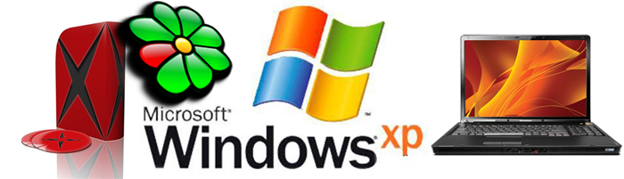

Мета: Ввести в короткий історичний екскурс програмного забезпечення і інформаційно-комунікаційних технологій. Виділити основні тенденції розвитку ПЗ.
Вступ.
Електронні обчислювальні машини є ефективним засобом для виконання будь-яких операцій з інформацією. Але для цього необхідно створити для комп'ютера інструкцію на зрозумілій йому мові - програму, яка ПЗяснює як саме треба обробити інформацію. Власне, сам комп'ютер абсолютно не володіє ніякими знаннями - вони усі знаходяться у виконуваних на ньому програмах.
Залежно від програми, можна перетворювати ПК на робоче місце письменника або вченого, дизайнера або відеорежисера, радіоведучого або архітектора.
З розширенням можливостей ПК користувачу ПЗтрібно усе більш різноманітне програмне забезпечення (ПЗ) для вирішення тих або інших завдань.
Перші пакети програмного забезпечення були простими тематичними підбірками додатків для вирішення певних завдань в тій або іншій сфері.
Сучасний програмний пакет є складною програмною системою, який включає спеціалізовані системні і мовні засоби.
Наприклад, в історії розвитку обчислювальних прикладних програм можна виділити чотири ПЗкоління, кожне з яких характеризується певними особливостями, які входять до складу комПЗнентів - вхідних мов, предметного, системного забезпечення.
В якості вхідних мов прикладні програми першого Покоління використовували універсальні мови програмування (Фортран або Алгол 60 ) або мови управління завданнями операційних систем. Складання завдань на таких мовах практично не відрізнялося від того, яке пише програма алгоритмічною мовою.

У другому Поколінні розробка прикладних програми відбувалася за участю системних програмістів. Це призвело до появи спеціалізованих вбудованих мов на базі універсальних мов програмування. Перекладач з такої мови був препроцесором до транслятора відПЗвідної алгоритмічної мови.
Третій етап розвитку прикладних програм пов'язано з появою самостійних вхідних мов, орієнтованих на простих, буденних користувачів.
Особлива увага приділялася системним компонентам таким, що забезпечує простоту і зручність. Це досягається головним чином за рахунок такої спеціалізації вхідних мов і включення до складу пакету засобів автоматизованого планування обчислень.
НагоруЧетвертий етап характеризується створенням прикладнихх програм, експлуатованих в діалоговому режимі роботи. Основною перевагою такої взаємодії є можливість зворотного зв'язку з користувачем в процесі побудови, рішення задачі і аналізу отриманого результату.